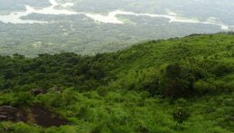
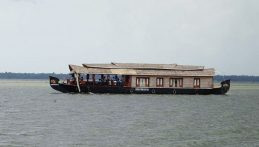

Ilaveez poonchira
TIlaveezha poonchira, a hill station near Melukavu Mattom, 60kms from Kottayam is gaining tourist importance. Located among three beautiful hillocks…

Previous
Next
Vembad Lake
Kottayam has a vast network of rivers and canals, which empty into the great expanse of water called the Vembanad…
Kottayam is one of fourteen districts in the state of Kerala, India. Kottayam district comprises six municipal towns:
Kottayam, Changanassery, Pala, Erattupetta, Ettumanoor, and Vaikom. It is the only district in Kerala that does not
border the Arabian Sea or any other states. The district is bordered by hills in the east, and the Vembanad Lake and
paddy fields of Kuttanad on the west. The area's geographic features include paddy fields, highlands, and hills. As of
the 2011 census, 28.6% of the district's residents live in urban areas, and it reports a 97.2% literacy rate. In 2008,
the district became the first tobacco-free district in India. The district's headquarters are based in the city of Kottayam.
The towns of Pala and Kidangoor are located in the center of the district. Hindustan Newsprint Limited and Rubber
Board are two central government organizations located in the district. The headquarters of two religious communities
in Kerala are also in the Kottayam District: Nair Service Society and the Indian Orthodox Church.